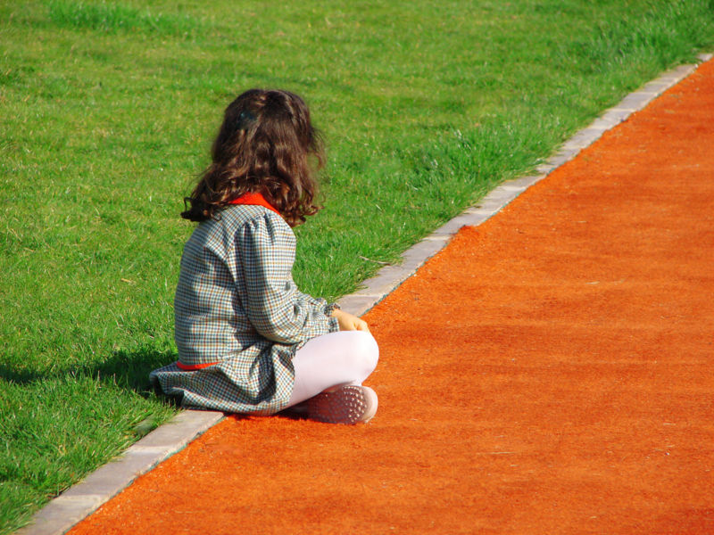

Stay fit after 60
PEMLHORO OCTOBER 24,2020 STORIES LEAVE A COMMENTI have always tried to stay fit and work out regularly, but after tearing my rotator cuff I decided to get a professional trainer and get that elusive six-pack at 60 years old. I worked out 5-6 days a week. One year after my surgery did a photo shoot. With …
Learn how to live a positive life
PEMLHORO OCTOBER 23,2020 STORIES LEAVE A COMMENTI started pole dancing four years ago. It completely changed my life in the most positive way. I have never been the type of “sportive person”. Apart from swimming, I didn’t practice any kind of sport. One day, a friend challenged me: “you should try to do something for yourself …
How to get up again after falling
PEMLHORO OCTOBER 23,2020 STORIES LEAVE A COMMENTOne of my best feeling ever! I knew that it was hard but not so hard and when I crossed the finish line and I got the Spartan Medal I was more than happy! More then proud! I was in heaven and in hell at the same time. I worked …
Route to happiness
PEMLHORO OCTOBER 23,2020 STORIES LEAVE A COMMENTI am Alejandra Arbeláez from Medellin – Colombia, a Bollywood dancer, Oriental Fusion, and Zumba Fitness instructor. When I was very young, I discovered that dancing is not just moving the body or a simple lifestyle. It is to fly with the feet, to free the soul, and the spirit. …
Fun in sports and performance
PEMLHORO OCTOBER 23,2020 STORIES LEAVE A COMMENT“I have eds type 3 and CRPS in my left leg, I am a wheelchair user for 2.5 years. My goal was and is to make my upper body strong, that’s how the sport came along, what an outlet! I do strength training, kettlebell, wheelchair basketball, hand bike, at my …
Reason to play tennis for individuals with autism
PEMLHORO OCTOBER 23,2020 STORIES LEAVE A COMMENTI was born a selective mute and diagnosed with autistic traits. By 6.5 years, I started playing tennis which made me develop my language. My mum always says it’s the best therapy I’ve ever had because from being 5 years behind my peers, I’m now maybe 1 year if that… …
Inner connection and meditation through Yoga
PEMLHORO OCTOBER 23,2020 STORIES LEAVE A COMMENTI was born and raised in the mountains of Jharkhand. I started teaching yoga in 2017after 10 years of advanced movement and yoga training. Inspired by movement with a background in anatomy and kinesiology, I weave together hatha yoga, yoga philosophy, and pranayama. With creative sequencing and intelligent anatomy-based alignment …
When I lost my excuses, I found my results.
PEMLHORO OCTOBER 23,2020 STORIES LEAVE A COMMENTI am a knee amputee from Philadelphia. I made a bad decision at a young age which cost me my left leg and abdominal injuries. Without a strong mental your nothing. I love to workout every day. It keeps me sane. I believe mental strength is a must. For those …
Like father like son!
PEMLHORO OCTOBER 23,2020 STORIES LEAVE A COMMENTMy first passion was cycling and swimming at the age of 5. Dad got me into cycling and from that moment I was hooked. He has always been active so at 17 we both decided to do a half distance Ironman (both finished) from that moment we’ve both been hooked! …
The motivation of a paralympic wheelchair player
PEMLHORO OCTOBER 23,2020 STORIES LEAVE A COMMENTWhen I was 6 years old, I started participating in sports. I began running in street races, and I won several awards. Then, I joined my school’s basketball team, when I was 7 years old, and since then I’m playing basketball. In 2018, I joined a wheelchair basketball team as …